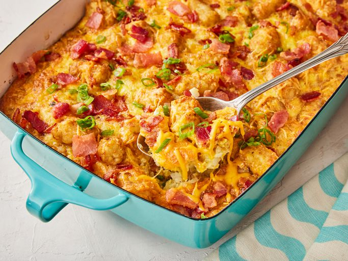

Tater Tot and Bacon Casserole

Description
A yummy Tater Tot breakfast casserole that's quick to throw together and great for guests or for Christmas morning.
Ingredients
- 1 pound bacon, diced
- 1 (32 ounce) package frozen bite-size potato nuggets (such as Tater Tots)
- 12 large eggs
- 1/2 cup milk
- 1 pinch salt
- 1/2 teaspoon ground black pepper
- 2 cups shredded Cheddar cheese
Steps
- Preheat the oven to 350 degrees F (175 degrees c)
- Place bacon in a large skillet and cook over medium-high heat, turning occasionally, until evenly browned, 5 to 8 minutes
- Drain bacon on paper towels
- Spread bacon into the bottom of a 9x13-inch baking dish to cover
- Spread potato nuggets over the bacon
- Beat eggs, milk, salt, and pepper together in a bowl
- Pour mixture over the layer of potato nuggets
- Top with cheddar cheese and bake in the preheated oven until hot in the center, about 1 hour
- Serve